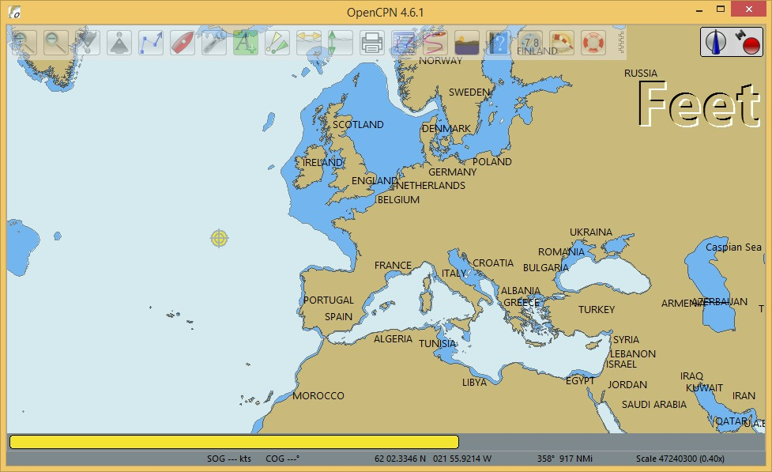
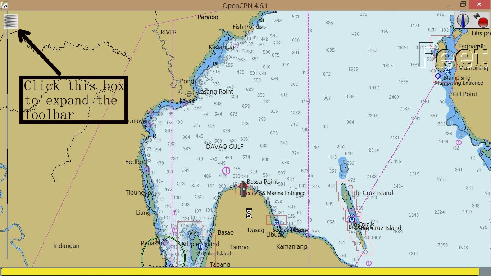
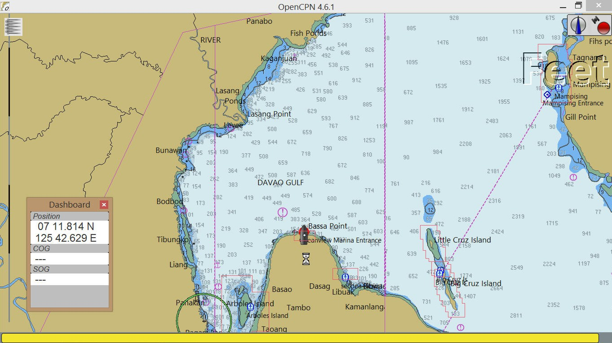
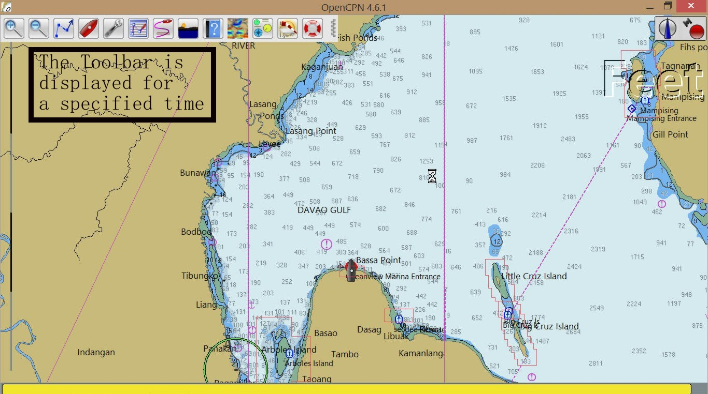
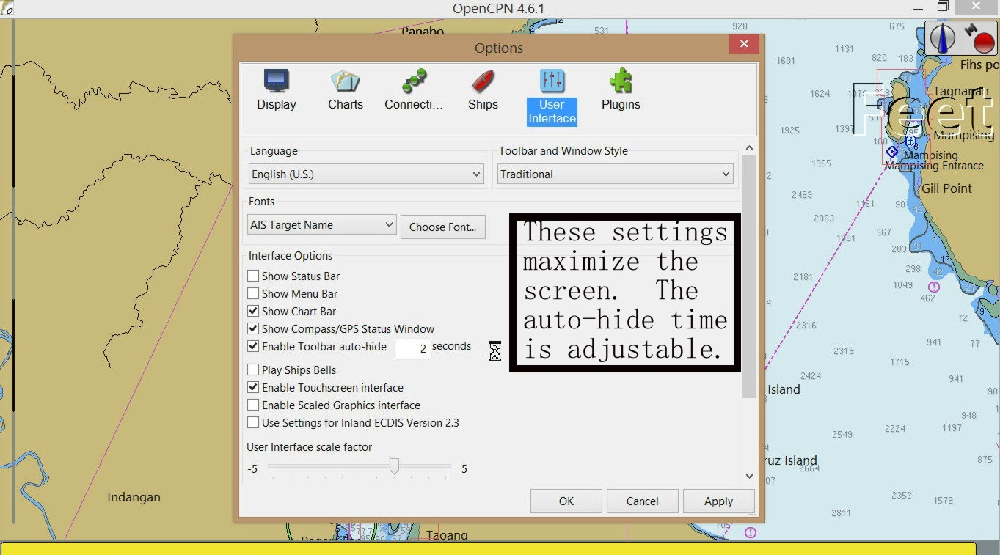
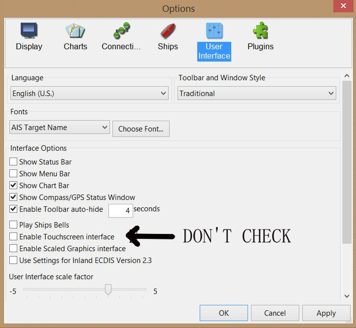

The default display is shown here:

The display can be maximized to this.

Gone are the Menu Bar (at the top), the Status Bar (at the bottom) and the Toolbar.
Loss of the Toolbar? Not really … just click on the icon in the upper left corner to display the Toolbar for a specified time.
And the location, COG and SOG that are displayed in the Status Bar can be displayed on the Dashboard plugin.

SETTINGS
The settings to maximize the display are on Options/User Interface page.
I prefer to increase the Toolbar auto-hide time to 4 sec ILO the default of 2 sec.


CAUTION: Do not check the ‘Enable Touchscreen interface’. A bug In OpenCPN 4.6.1 will cause the chart ‘piano keys’ to sometimes turn black.

Terry Sargent 14 May 2017